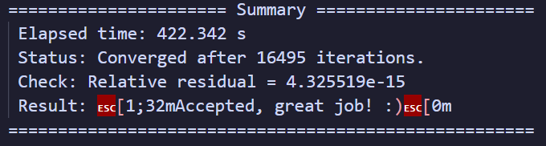
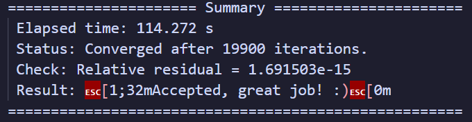
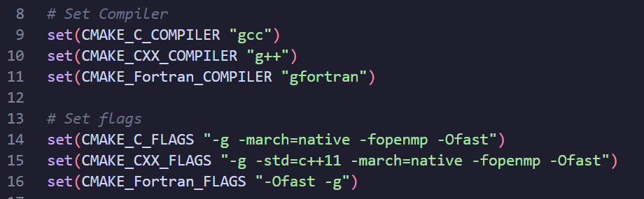
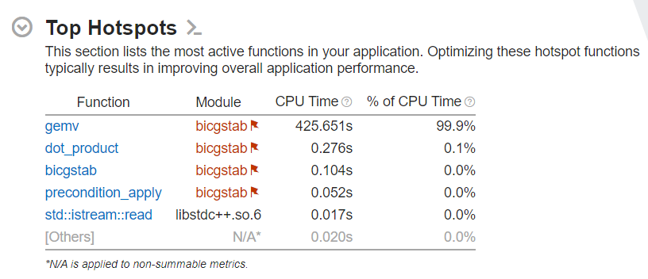
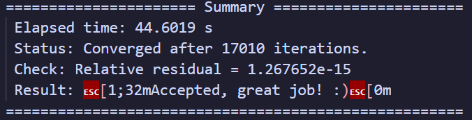
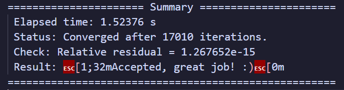
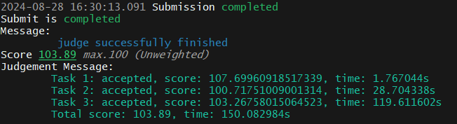
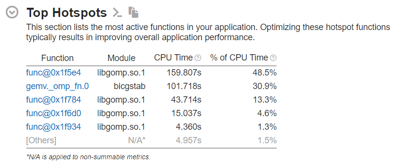
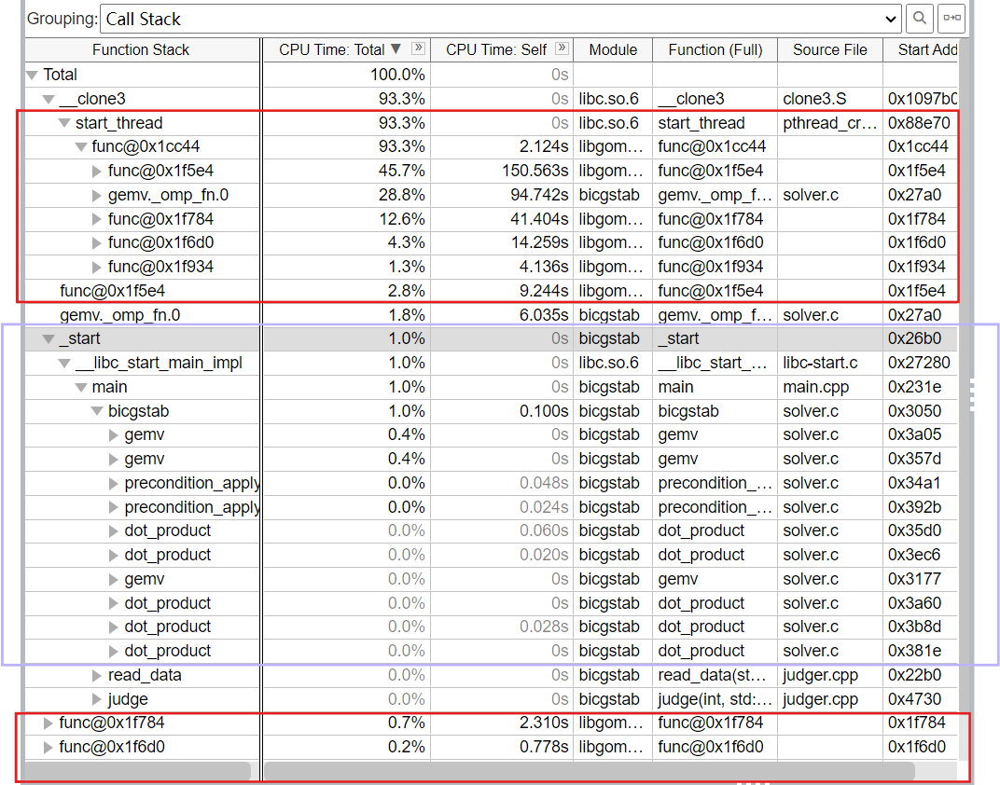
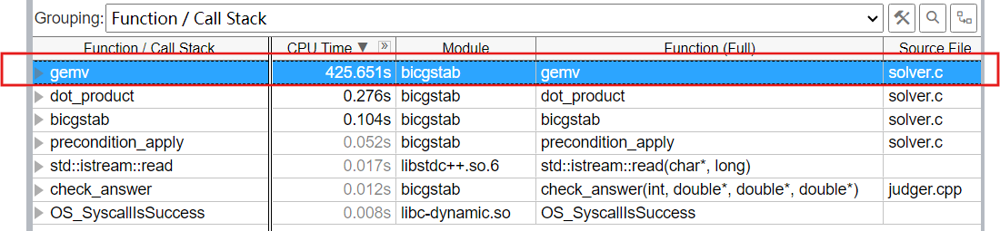

Lab4 Report
1. 实验介绍
BiCGSTAB (Biconjugate gradient stabilized method, 稳定双共轭梯度法) 正是一种迭代求解非对称线性系统的方法。它是 BiCG (Biconjuagate gradient method, 双共轭梯度法) 的变种，有着更快速平缓的收敛表现。
我们需要对 baseline 中的 solver.c 进行优化，并在使用 MPI 时在 main.c 中添加必要的代码。
data 部分给出了三组测试数据，数据规模分别为 2001 \(\times\) 2001， 4001 \(\times\) 4001，6001 \(\times\) 6001。
硬件环境是 Slurm 上的 Solver 分区，将提供 3 个节点 (M602-M604），每个节点最多使用 52 个物理核心 (2 × Intel(R) Xeon(R) Gold 5320 CPU @ 2.20GHz)，以及 503 GiB 内存。
2. 实验步骤
首先测试下 baseline 的运行情况。为了缩短程序运行时间，在优化阶段我先只使用了 case_2001.bin 这一组数据。

2.1 Step 1
先做编译器优化。我继续沿用了 GCC 编译器，并添加 -std=c++11 -Ofast 的编译优化选项，性能有了明显提升：

以 gemv 函数为例，用 Compiler Explorer 分析编译器优化前后的汇编语言。添加编译优化选项前：
添加编译优化选项后：
原始代码频繁地在栈上保存和加载变量，优化后的代码更多地依赖寄存器来存储，将循环结构简化，以减少不必要的计算和跳转；优化后的代码利用了 rcx 和 r8 寄存器来跟踪循环计数和内存地址，避免了在每次迭代中重复计算偏移量。
但是也可以看出，编译器优化后使用的依然是 xmm 寄存器，没有启用ymm / zmm 系列的向量化寄存器。这是因为编译器并不知道硬件是不是支持 AVX 。这时我们可以让编译器自己检测当前硬件支持的指令集，只需要添加编译器优化指令 -march=native 即可。
效果是非常明显的，速度在原来的基础上又快了一倍：
所以最终我们的编译器设置为：

2.2 Step 2
由于对 BICGSTAB 算法没有了解，所以根据 Lab 文档的建议，我们关注 solver.c 代码本身。在 run.sh 中通过 source /opt/intel/oneapi/setvars.sh 启用性能分析工具 Vtune 进行 profile 。我尝试了直接在 VS Code 上通过 X11 转发启动图形化界面，但似乎有些问题一直无法成功；又尝试了 MobaXterm ，但反应延迟非常高，并且没法正常启动分析；最后是将生成的报告下载到本地查看。
source /opt/intel/oneapi/setvars.sh
VTUNE_OUTPUT_DIR = vtune_results
-p $VTUNE_OUTPUT_DIR
-collect hotspots -result-dir $VTUNE_OUTPUT_DIR -quiet ./build/bicgstab ./data/case_2001.bin
-finalize -result-dir $VTUNE_OUTPUT_DIR
这里我主要关注了 hotspot 的信息：

Summary 中给出了 Top Hotspots 的汇总，可以明显看到 gemv 函数占据了绝大部分 CPU Time 。所以接下了优化重心放在 gemv 上。
P.S 实际上 Vtune 的功能十分强大，但现在属实还不太会用，光让它生成出一份正常的报告就花了很多时间，所以实际优化的时候 Vtune并没有帮到我什么忙qwq，希望之后有机会详细学一下
2.3 Step 3
对于 gemv 的优化，首先我尝试了访存优化，利用程序的空间局部性，对矩阵和向量进行分块：
void gemv ( double * y , double * A , double * x , int N ) {
const int B = 560 ; // 分块大小
for ( int i = 0 ; i < N ; i ++ ) {
y [ i ] = 0.0 ;
}
for ( int i = 0 ; i < N ; i += B ) {
for ( int j = 0 ; j < N ; j += B ) {
int i_max = ( i + B > N ) ? N : i + B ;
int j_max = ( j + B > N ) ? N : j + B ;
for ( int ii = i ; ii < i_max ; ii ++ )
for ( int jj = j ; jj < j_max ; jj ++ )
y [ ii ] += A [ ii * N + jj ] * x [ jj ];
}
}
}
我将矩阵分成了 560 \(\times\) 560 的块，将向量分成了 1 \(\times\) 560 的块。选取 560 是因为节点的 L1d cache 的大小为 2.4 MiB ，能存储约 560 \(\times\) 560 个 double 数。
在内循环中，随着 jj 累加，对 A 和对 x 的内存访问是连续进行的，这样可以通过数据预取机制提前将数据加载到缓存中，减少 cache miss 。
但是这种做法的效果并不好，在时间上几乎没有任何提升，加上后面我始终没想明白怎么把分块和 SIMD 结合在一起，所以在最终代码中并没有体现任何分块，这只是一次对访存优化不成功的尝试。
2.4 Step 4
接下来尝试 SIMD 指令级并行。我们直接使用 AVX-512 指令集，同时取出 8 个 double 类型的数据同时运算。具体优化类似 Lab2.5 手写 SIMD 向量化。
我对 gemv dot-product precondition precondition_apply 四个函数使用了指令级并行优化，但真正对运行时间起到决定性作用的是 gemv 函数：
void gemv ( double * y , double * A , double * x , int N ) {
for ( int i = 0 ; i < N ; i ++ ) {
__m512d y_reg = _mm512_setzero_pd ();
int j ;
for ( j = 0 ; j <= N - 8 ; j += 8 ) {
__m512d A_reg = _mm512_loadu_pd ( A + i * N + j ); // 内存未对齐
__m512d x_reg = _mm512_loadu_pd ( x + j );
__m512d mul_reg = _mm512_mul_pd ( A_reg , x_reg );
y_reg = _mm512_add_pd ( y_reg , mul_reg );
}
y [ i ] = _mm512_reduce_add_pd ( y_reg );
// 剩余边界
for (; j < N ; j ++ ) {
y [ i ] += A [ i * N + j ] * x [ j ];
}
}
}
由于 A，x 的读取不在 solver.c 中，所以没法将内存对齐。总体思路就是每次从 A，x 中读取 8 个 double 数据，并行地做向量的逐位乘法，再做向量累加，最后将 8 位数据相加得到对应结果向量第 i 位的值。
SIMD 指令级优化后，时间减少了约 10s ：

2.5 Step 5
在单节点上，我们往往使用多线程来进行并行化。OpenMP 是一种简单易用的多线程并行编程模型。
由于 OpenMP 本身在线程创建、调度、销毁上就有开销，所以我只对 gemv 函数使用了 OpenMP 。具体使用其实只是在外层 for 循环外加一句
用于启动多线程并行执行这个 for 循环，需要在 run.sh 中声明变量
export OMP_NUM_THREADS = 52
由于实验环境每个节点最多使用 52 个物理核心 (2 × Intel(R) Xeon(R) Gold 5320 CPU @ 2.20GHz)，所以我直接声明了 52 个线程。由于时间有限，我没有详细测试最优的线程数，只测试了应用超线程后 104 个线程和 52 个线程的效果差不多。
添加 OpenMP 后的代码如下：
void gemv ( double * y , double * A , double * x , int N ) {
#pragma omp parallel for
for ( int i = 0 ; i < N ; i ++ ) {
__m512d y_reg = _mm512_setzero_pd ();
int j ;
for ( j = 0 ; j <= N - 8 ; j += 8 ) {
__m512d A_reg = _mm512_loadu_pd ( A + i * N + j ); // 内存未对齐
__m512d x_reg = _mm512_loadu_pd ( x + j );
__m512d mul_reg = _mm512_mul_pd ( A_reg , x_reg );
y_reg = _mm512_add_pd ( y_reg , mul_reg );
}
y [ i ] = _mm512_reduce_add_pd ( y_reg );
// 剩余边界
for (; j < N ; j ++ ) {
y [ i ] += A [ i * N + j ] * x [ j ];
}
}
}
值的一提的是，从寄存器累加到 y[i] 前面是不需要限定 # pragma omp critical 的，因为每个线程并行处理时都对应单独的 i ，写入时 y[i] 是不存在冲突的，增加 critical 的限定反而会造成性能下降。
可以在 for 后添加 schedule(kind[, chunk_size]) 指定调度方式和粒度。我尝试了 static 和 dynamic 两种模式以及一些参数，但似乎都没有优化效果，加上时间有限，没有细致测试合适的参数，所以最后没有设置 schedule 。
但是第一次开启 OpenMP 后发现时间反而变慢了。起初我以为是 OpenMP 有巨大开销，测试的矩阵规模不够大，或是编译器优化已经优化到了这种程度。但都没有道理，这似乎是既增加了 OpenMP 的开销，又没有启用线程级并行的结果。
最后发现问题出在 run.sh 文件，我依旧沿用了初始 #SBATCH - cpus-per-task=1 的设置，这相当于重新限制了只能使用一个 CPU 核心。在设定了每个 task 分配的 CPU 核心数并简单设定绑核策略为 close 后
#SBATCH --cpus-per-task=104
export OMP_PROC_BIND = close
运算速度有了巨大提升：

2.6 优化效果测试
至此，优化已经有较好的成效，在 oj 平台进行测试 取得 103.89 分：

并用 Vtune 测试性能进行对比：

可以看到 hotspot 已经发生了很大变化，似乎 CPU 时间不再集中在 gemv 函数上，而在计时区内运行 BICGSTAB 的时间很短，对于整个程序，更多的时间是用在 OpenMP 相关的额外开销上，比如 libomp.so 是用于实现 OpenMP 并行变成的库，而 gemv._omp_fn.0 应该是自动生成线程处理的函数，负责执行如 #pragma omp for 指令中的代码块。
在这两张图中显示的更详细：整个程序的主要时间是用在前后红色框中 OpenMP 带来的开销，中间紫色框的部分所占用的时间是极少的；与之相反，在 baseline 的测试结果中，gemv 函数的耗时是集中且极高的。


2.7 MPI
MPI 是一种非共享内存的进程级并行编程模型，因此在使用 MPI 进行并行化时，需要手动进行进程间的通信来实现数据在进程间的传输。 MPI 可以让我们突破单个节点的硬件限制，在多节点上实现并行化。
简单来说， OpenMP 让我们在单一节点上实现多线程并行，而 MPI 让我们在可以实现多节点并行。
因为是多节点并行，所以显然需要分配计算任务，具体来说就是将输入进来的矩阵进行切割，并通过进程间的通信来分配给各个进程，每个进程分别计算出结果再合并输出。根据这个思路，我尝试由一个进程读取数据，将数据分配给其他进程的模式。
但我的第一次尝试把问题想得太简单了，我直接在根进程读取完数据后就对矩阵进行了分割，给每个函数都加上 start 和 end ，试图让后面每个进程的操作都针对分割后的一块矩阵单独进行，最后把结果拼接成要求的向量。
// bad version
void gemv ( double * y , double * A , double * x , int N , int start , int end );
double dot_product ( double * x , double * y , int N , int start , int end );
...
int chunk = N / size ;
int remainder = N % size ;
int start , end ;
if ( rank < remainder ) {
start = rank * ( chunk + 1 );
end = start + chunk ;
} else {
start = rank * chunk + remainder ;
end = start + chunk - 1 ;
}
这显然是不合理的，结果也是显而易见的，虽然可以跑通，但答案错误。
发现问题后只能退而求其次，只对 gemv 部分使用 MPI 。但我仍然沿用了上个版本的思路，只由根进程读取数据再传输到各个子进程；每个进程在其他部分都各自执行，只在 gemv 时拆分成每个进程算一部分，合并后又各自执行。
由于对 MPI 太不熟悉，想出的这个路径显然是一种及其低效的思路。不但会因为根进程向子进程传输大矩阵而增加巨量开销，而且这样做相当于在 gemv 部分之外每个进程在进行着相同且重复的工作。
关于 MPI 的各种函数的接口定义，可以查看 Microsoft MPI Reference 。
// bad version, too!
void gemv ( double * y , double * A , double * x , int N , int start , int end );
...
int rank , size ;
// 获取当前进程的相关信息
MPI_Comm_rank ( MPI_COMM_WORLD , & rank );
MPI_Comm_size ( MPI_COMM_WORLD , & size );
int * recvcounts = ( int * ) malloc ( size * sizeof ( int ));
int * displs = ( int * ) malloc ( size * sizeof ( int ));
int chunk = N / size ;
int remainder = N % size ;
int offset = 0 ;
for ( int i = 0 ; i < size ; i ++ ) {
// 每个进程的接收数据量
recvcounts [ i ] = chunk + ( i < remainder ? 1 : 0 );
displs [ i ] = offset ;
offset += recvcounts [ i ];
}
// 计算当前进程的起始位置和结束位置
int start = displs [ rank ];
int end = start + recvcounts [ rank ];
...
int bicgstab ( int N , double * A , double * b , double * x , int max_iter , double tol , MPI_Comm comm );
...
// 1. r0 = b - A * x0
gemv ( r , A , x , N , start , end );
MPI_Barrier ( comm );
if ( rank == 0 )
MPI_Gatherv ( MPI_IN_PLACE , 0 , MPI_DOUBLE , r , recvcounts , displs , MPI_DOUBLE , 0 , comm );
else
MPI_Gatherv ( r + start , end - start , MPI_DOUBLE , r , recvcounts , displs , MPI_DOUBLE , 0 , comm );
MPI_Barrier ( comm );
MPI_Bcast ( r , N , MPI_DOUBLE , 0 , comm );
for ( int i = 0 ; i < N ; i ++ ) {
r [ i ] = b [ i ] - r [ i ];
}
数据读取模式：
// Read data from file
if ( world_rank == 0 ) {
read_data ( filename , & N , & A , & b , & x );
}
// 对各个进程广播 N 的值
MPI_Bcast ( & N , 1 , MPI_INT , 0 , MPI_COMM_WORLD );
// 只有主进程读取数据，其他进程的数据由主进程分配
if ( world_rank != 0 ) {
A = ( double * ) malloc ( N * N * sizeof ( double ));
b = ( double * ) malloc ( N * sizeof ( double ));
x = ( double * ) malloc ( N * sizeof ( double ));
}
// 向各个进程广播 A，b，x 的值
MPI_Bcast ( A , N * N , MPI_DOUBLE , 0 , MPI_COMM_WORLD );
MPI_Bcast ( b , N , MPI_DOUBLE , 0 , MPI_COMM_WORLD );
MPI_Bcast ( x , N , MPI_DOUBLE , 0 , MPI_COMM_WORLD );
但即使是这种极其 naive 的 MPI 实现，我也遇到了直到最后都没有解决的问题：迭代没有收敛，始终是 -nan
迫于对于 MPI 有限的知识和调试手段，这个问题直到报告提交都没有解决qwq
3. 结语
这是本次 HPC101 超算短学期的最后一个实验报告。回顾 Lab4 ，虽然通过 SIMD 指令级并行和 OpenMP 已经实现了 oj 较为不错的分数，但是没有实现 MPI 还是十分遗憾的。
而回顾整个短学期课程，觉得当初选择这门课程实在是明智的选择。早在报名之初就有队内同学让我"做好付出整个暑假的准备"。如今暑假悄然过去，顿感不虚此行，获益良多。从最初对 linux 一无所知挣扎着配置出集群运行 HPL ，到 Lab5 艰难的构建 Transformer ；从 Lab2 简单的向量化计算到后面的 OpenMP 和 MPI ，仿佛一段旅程，路途艰险但风景灿烂。希望短学期的课程只是我与超算缘分的开始。也感谢老师、助教和学长们对课程辛苦的付出！